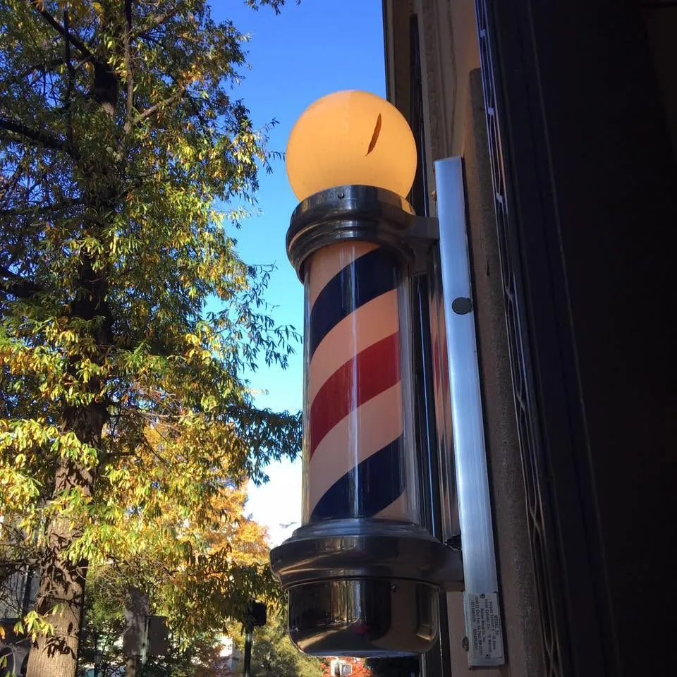
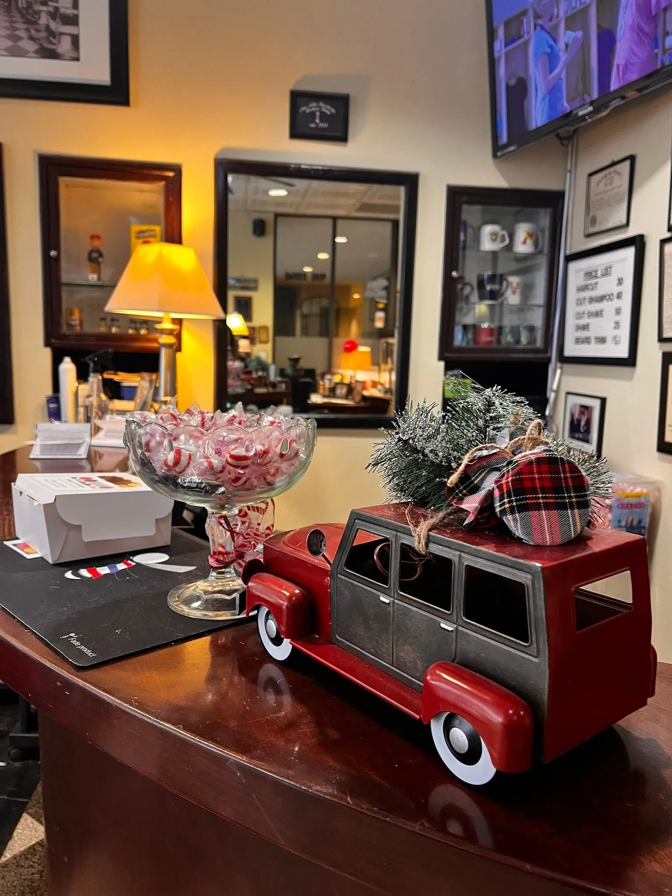

Find us at Fifth & Franklin.
Ground floor of the historic John Marshall building, on the Franklin Street side, in the heart of Downtown Richmond. Look for the barber pole.

When to come by
| Monday | 8:00 AM – 8:00 PM |
|---|---|
| Tuesday | 8:00 AM – 8:00 PM |
| Wednesday | 8:00 AM – 8:00 PM |
| Thursday | 8:00 AM – 8:00 PM |
| Friday | 8:00 AM – 8:00 PM |
| Saturday | 8:00 AM – 5:00 PM |
| Sunday | Closed |
Hours from the shop’s current listing; other directories differ, so please call ahead to confirm, especially on holidays.
502 E Franklin StRichmond, VA 23219Ground floor, Franklin Street side of the Hotel John Marshall building.
Not to scaleTurn-by-turn directions
From wherever you are downtown
From the Capitol
Capitol Square is a few blocks east. Walk west along Franklin Street to 5th Street; the shop is on the ground floor of the John Marshall building.
From VCU
Franklin Street runs east from VCU’s Monroe Park campus into downtown. Follow it to 5th Street.
From Broad Street
The shop is two blocks south of Broad Street at 5th and Franklin. GRTC Pulse buses run along Broad.
By car
Use the Google Maps link for directions. Directory listings mention free lot parking — call ahead to confirm.


The shop at a glance
- Name
- The John Marshall Barber Shop
- Since
- 1929 — Downtown Richmond
- Address
- 502 E Franklin St, Richmond, VA 23219 (ground floor, Franklin Street side, at 5th & Franklin)
- Phone
- (804) 649-7577
- Hours
- Mon–Fri 8 AM–8 PM · Sat 8 AM–5 PM · Sun closed
- Services
- Haircuts, hot-towel straight-razor shaves, beard trims, head shaves, women’s cuts, shoe shines
- Price guide
- Cut $24 · Cut & Shampoo $30 · Cut & Shave $45 · Shave $22 · Shine $7 (last published — call to confirm)
- How to book
- Call (804) 649-7577. Appointments recommended; walk-ins, please call ahead.
- Payment
- Major cards listed as accepted (AmEx, Visa, Mastercard, Discover)
- Parking
- Free lot parking listed in directories — call to confirm
Visiting the shop
The practical details, answered plainly.
Where exactly is the entrance?
The shop is on the ground floor of the historic John Marshall building at 502 E Franklin St, on the Franklin Street side near the corner of 5th and Franklin.
Is there parking?
Directory listings mention free lot parking. Parking arrangements downtown can change, so call (804) 649-7577 to confirm before you drive in.
Are you open on Sundays?
No. The shop is closed on Sunday and open Monday through Friday 8 AM to 8 PM and Saturday 8 AM to 5 PM.
What about holiday hours?
Holiday hours can differ from the regular schedule. Call the shop ahead of time to check.
Can I walk in?
Appointments are recommended. If you plan to walk in, call ahead to check the wait.
How far is the shop from the Virginia Capitol?
A few blocks. Capitol Square sits at the east end of Franklin Street; walk west along Franklin to 5th Street.
See you downstairs.
Call ahead and we’ll have the chair ready. Appointments are recommended; walk-ins, please call to check the wait.
(804) 649-7577